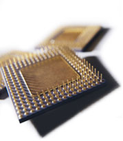

VLIWTutorial Summary |
||||
|

The project is centered around a multi-part VLIW tutorial. First, we explain the background and history behind VLIW and its difficulty of implementation. We talk about the differences between VLIW and superscalar processes in relation to hardware and software complexity. The next segment concentrates on real-life examples of VLIW implementations. This entails in-depth analysis of chips currently in production, especially the Transmeta Crusoe and the Texas Instruments TMS320C6x: their specific use of VLIW and their architectures, uses, costs, and popularity. The third section talks about practical applications of the VLIW technology. Due to the complexity of implementing VLIW compilers, most of the applications apply to systems with inherent parallelism, such as sound and graphics processing (e.g., the TI DSP chip). VLIW's promise towards implementation in embedded systems is also analyzed and deconstructed. This section includes a step-by-step, scripted interactive demonstration showing how a standard serial MIPS loop can be unrolled into VLIW.
|
|
Navigation
|
||
| ||||